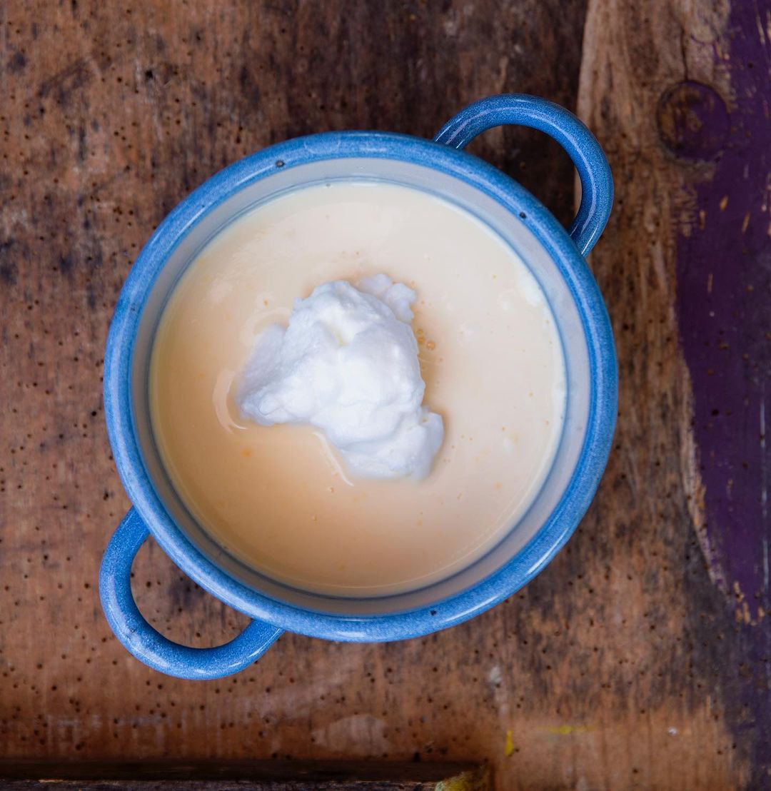

•VTÁČIE MLIEKO•
Vždy som sa čudovala, akéže to môže byť od vtáka. Už ako malej mi to nedávalo žiadnu logiku. Francúzsky majú oveľa príznačnejší a malebnejší názov pre tento dezert. Volajú ho îles flotantes, čo v preklade znamená plávajúce ostrovčeky. To už skôr dáva logiku, ktorú som v tom od detstva hľadala...
#bohemky #vtaciemlieko #ilesflottantes #dezert #odbabicky #dessert #alaparisienne #sweetparis #prebohemky